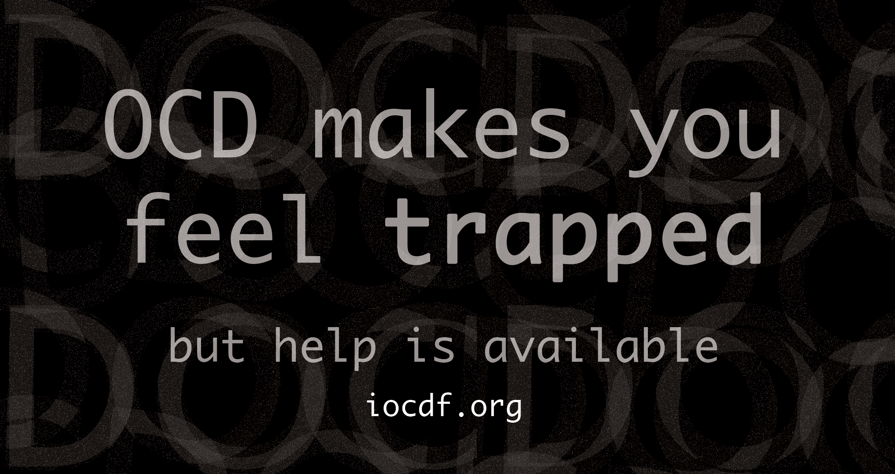
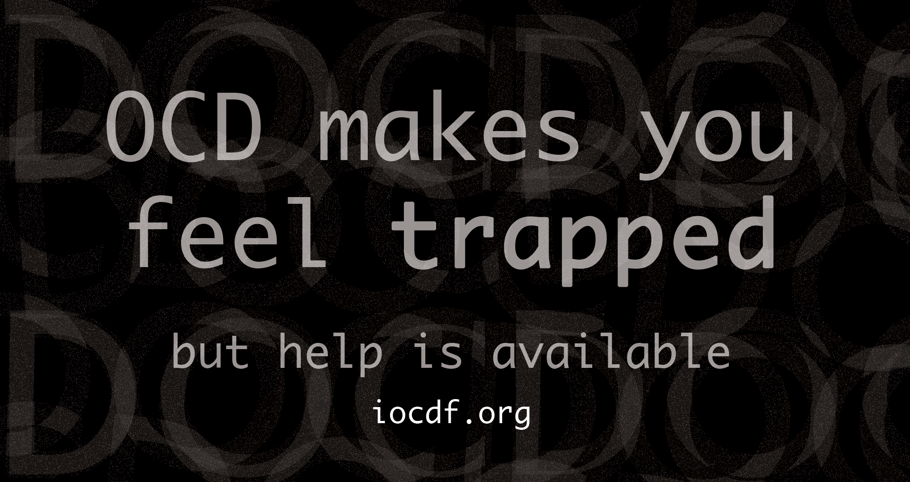
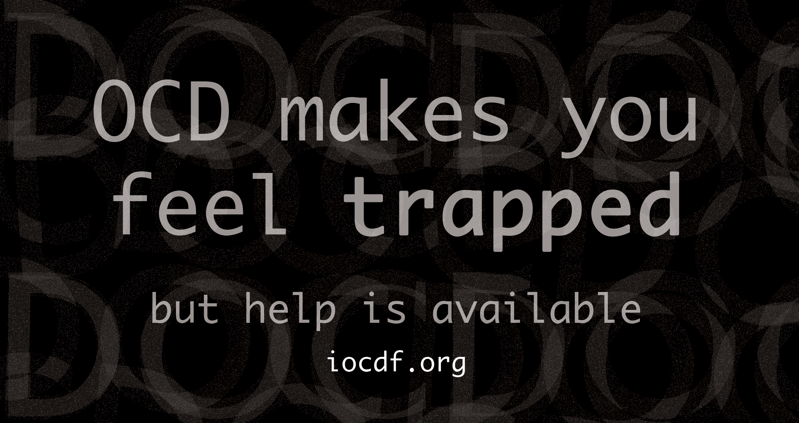

This is a public service announcement poster about the struggles of Obsessive Compulsive Disorder (OCD). As someone who suffers from the disorder, I wanted to depict the chaotic feeling I experience while having an episode.I designed the background with overlayed jagged text, and I created handcuffs that spell out “OCD” to represent the trapped cycle that people with OCD often experience. This poster is meant to be a wake up call to show the reality of the disorder to those who don't have it, while also indicating that help is available. Designed in Photoshop and Illustrator.
